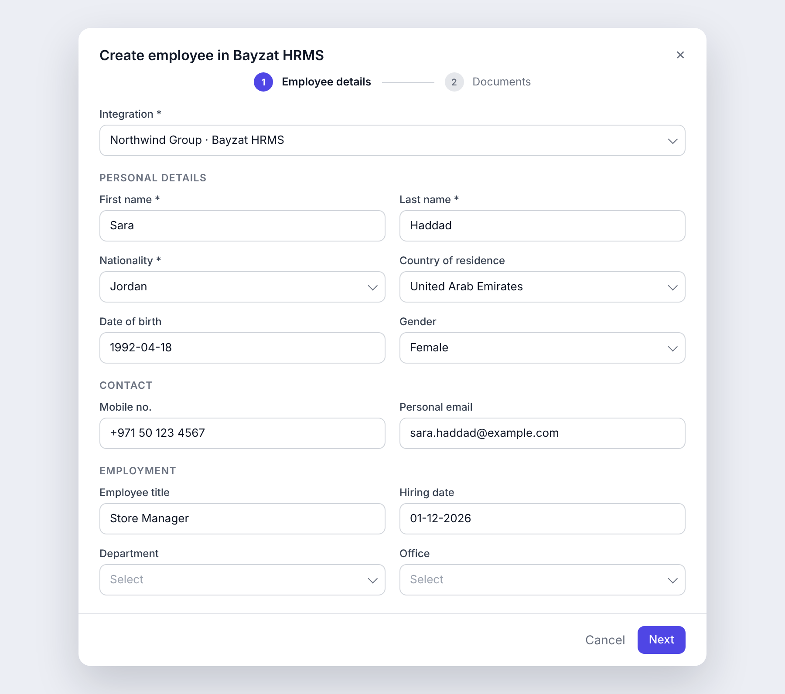
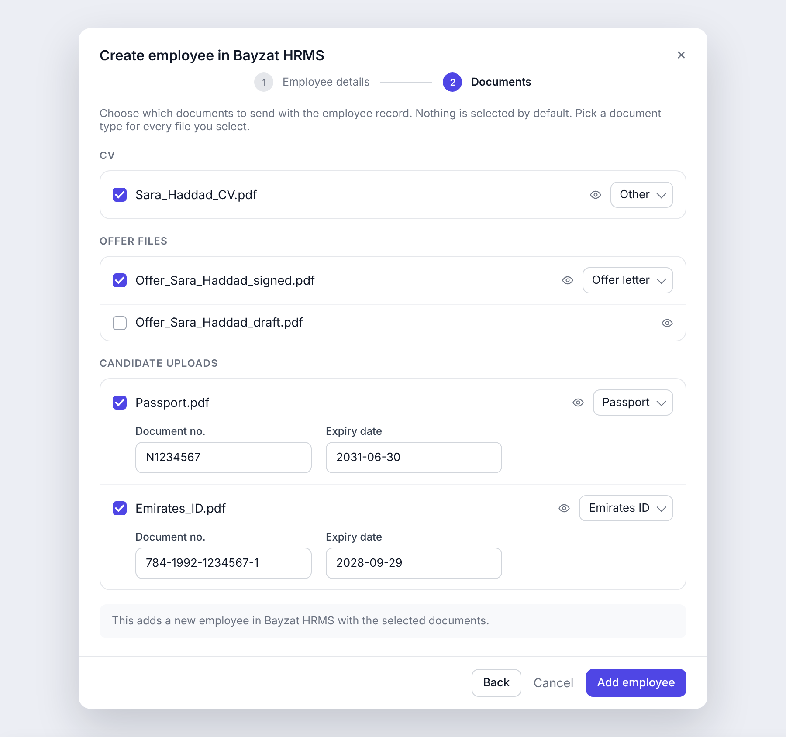
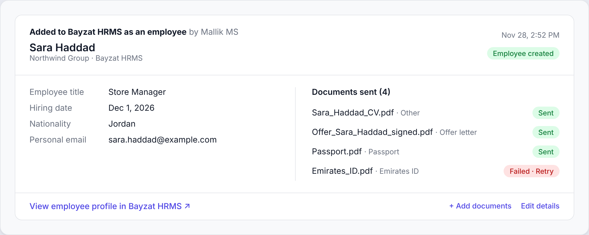

Context
Whitecarrot is sold through a partnership with Bayzat HRMS, an HR management system. Most customers use both: Whitecarrot until someone is hired, Bayzat HRMS from their first day of employment.
Problem
The integration sent only a new hire's basic details. No documents. HR teams downloaded the signed offer, passport, Emirates ID and visa from the ATS one by one, then uploaded each file again in Bayzat HRMS.
It happened on every hire. It was slow, and it was where errors entered the employee record: the wrong file, a missing ID, an expiry date nobody captured.
"When someone is hired, I want their employee profile ready, with only the documents that belong there."How HR teams described the need
Use cases
- As an HR admin, I create the employee in Bayzat HRMS as soon as the candidate is hired, without retyping their details.
- I choose which documents go to the employee record. A signed offer does; a draft offer doesn't.
- ID documents arrive with their number and expiry date, so compliance checks work from day one.
What we shipped
- Shown only when it applies. "Add as an employee" appears only when the candidate is hired and Bayzat HRMS is connected.
- Step one: employee details. Prefilled from the candidate profile. HR adds only what the ATS can't know: work email, employee ID and department.
- Step two: documents. Files are grouped by source: CV, offers and e-signed documents, and candidate uploads.
- Nothing selected by default. Sending the wrong file into an HR record costs more than one extra click.
- Document type required. Bayzat HRMS organises documents by type, and ID types also require a number and expiry date.



Cut from the first release: pre-selecting the signed offer, suggesting document types from file names, and a review screen before sending. Each is useful, but none was needed to remove the manual work.
Rollout
The new version required every customer to reconnect their Bayzat HRMS account, so about 60 accounts had to take action before seeing any value. I ran it as a migration rather than an announcement:
- Targeted only Bayzat HRMS customers, with three numbered steps, a time estimate and an offer of a call.
- Worked with Bayzat HRMS to unblock accounts that couldn't reconnect from their side.
Impact
After launch, I traced each reported issue to its root cause. Candidate-uploaded passports and visas were missing from the document list: fixed. A National ID number couldn't be filled in: a limitation on the Bayzat HRMS side, where custom document types have no number field. That finding led to support for Saudi document types.
Learnings
- Measure use, not just setup. Next, I want to track employees and documents synced, not only connections.
- When a release needs customers to act, plan the migration as carefully as the feature. Next time I'd keep the old connection working during the switch.
- With a partner in the loop, communicate progress, not dates.